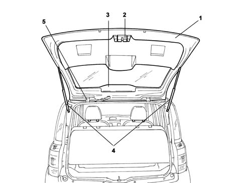

Introduction - TAILGATE/
- Path
- Descriptions > 70 FITTINGS > 7015 TAILGATE/ > Introduction - TAILGATE/
- Kind
- system description
- Applies to
- all engines; all production periods
- Interactive page
- https://sloeber94.github.io/elrnDB-fPnd/en/#/2753488
Applies to: all engines; all production periods
The tailgate is manufactured using conventional pressing processes and includes large window bonded flush with the tailgate. The edges that overlap the structure are screen-printed in black.
The window glass contains a demisting circuit, a hole in the lower central area that houses the rear wiper blade. A rear wiper reset reference mark is screen-printed on the left part. The third brake light houses the rear washer spray. The tailgate interior lining cover contains an opening with the emergency opening cable.
The tail-gate can be opened:
- by operating a button in the number plate mount
- by remote control, via a button on the remote control unit
- emergency cable
The tail-gate is held in position by two gas struts.
Applies to: all engines; all production periods
View of tail-gate components

1 - Tailgate 2 - Tail-gate catch 3 - Rear wiper motor 4 - Telescopic struts 5 - Tailgate hinges 6 - Interior trim